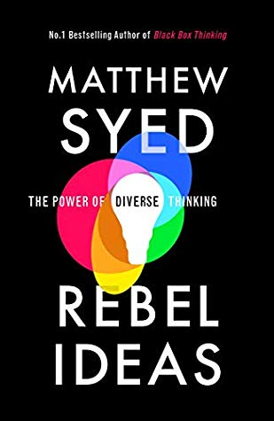

≈ 100 gigaflops
≈ 16 petaflops
1 gigbit/s
100 bit/s
104
1014
[edit]
The Delve initiative is a group that was convened by the Royal Society to help provide data-driven insights about the pandemic, with an initial focus on exiting the first lockdown and particular interest in using the variation of strategies across different international governments to inform policy.
Right from the start the, data was at the heart of what DELVE does, but the reality is that little can be done without domain expertise and often the data we required wasn’t available.
However, even when it is not present, the notion of what data might be needed can also have a convening effect, bringing together multiple disciplines around the policy questons at hand. The Delve Data Readiness report (The DELVE Initiative 2020b) makes recommendations for how we can improve our processes around data, but this talk also focuses on how data brings different disciplines together around data.
[edit]
|
|
|
|
| compute |
≈ 100 gigaflops |
≈ 16 petaflops |
| communicate |
1 gigbit/s |
100 bit/s |
| (compute/communicate) |
104 |
1014 |
See “Living Together: Mind and Machine Intelligence” Lawrence (2017)
There is a fundamental limit placed on our intelligence based on our ability to communicate. Claude Shannon founded the field of information theory. The clever part of this theory is it allows us to separate our measurement of information from what the information pertains to1.
Shannon measured information in bits. One bit of information is the amount of information I pass to you when I give you the result of a coin toss. Shannon was also interested in the amount of information in the English language. He estimated that on average a word in the English language contains 12 bits of information.
Given typical speaking rates, that gives us an estimate of our ability to communicate of around 100 bits per second (Reed and Durlach 1998). Computers on the other hand can communicate much more rapidly. Current wired network speeds are around a billion bits per second, ten million times faster.
When it comes to compute though, our best estimates indicate our computers are slower. A typical modern computer can process make around 100 billion floating point operations per second, each floating point operation involves a 64 bit number. So the computer is processing around 6,400 billion bits per second.
It’s difficult to get similar estimates for humans, but by some estimates the amount of compute we would require to simulate a human brain is equivalent to that in the UK’s fastest computer (Ananthanarayanan et al. 2009), the MET office machine in Exeter, which in 2018 ranks as the 11th fastest computer in the world. That machine simulates the world’s weather each morning, and then simulates the world’s climate in the afternoon. It is a 16 petaflop machine, processing around 1,000 trillion bits per second.
[edit]
For human conversation to work, we require an internal model of who we are speaking to. We model each other, and combine our sense of who they are, who they think we are, and what has been said. This is our approach to dealing with the limited bandwidth connection we have. Empathy and understanding of intent. Mental dispositional concepts are used to augment our limited communication bandwidth.
Fritz Heider referred to the important point of a conversation as being that they are happenings that are “psychologically represented in each of the participants” (his emphasis) (Heider 1958).

Figure: Conversation relies on internal models of other individuals.
Figure: Misunderstanding of context and who we are talking to leads to arguments.
Embodiment factors imply that, in our communication between humans, what is not said is, perhaps, more important than what is said. To communicate with each other we need to have a model of who each of us are.
To aid this, in society, we are required to perform roles. Whether as a parent, a teacher, an employee or a boss. Each of these roles requires that we conform to certain standards of behaviour to facilitate communication between ourselves.
Control of self is vitally important to these communications.
The high availability of data available to humans undermines human-to-human communication channels by providing new routes to undermining our control of self.
$$ \text{data} + \text{model} \stackrel{\text{compute}}{\rightarrow} \text{prediction}$$
Any policy question can be framed in a number of different ways - what are the health outcomes; what is the impact on NHS capacity; how are different groups affected; what is the economic impact – and each has different types of evidence associated with it. Complex and uncertain challenges require efforts to draw insights together from across disciplines.
[edit]
To improve communication, we need to ‘externalise cognition’, have objects that are outside our brains, are persistent in the real world, that we can combine with our individual knowledge. Doing otherwise leaves us imagining the world as our personal domain-utopias, ignoring the ugly realities of the way things actual progress.
Data can provide an excellent convener, because even if it doesn’t exist it allows conversations to occur about what data should or could exist and how it might allow us to address the questions of importance.
Models, while also of great potential value in externalising cognition, can be two complex to have conversations about and they can entrench beliefs, triggering model induced blindness (a variation on Kahneman’s theory induced blindness).
Figure: Models can also be used to externalise cognition, but if the model is highly complex it’s difficult for two individuals to understand each others models. This shuts down conversation, often “mathematical intimidation” is used to shut down a line of questioning. This is highly destructive of the necessary cognitive diversity.
Bandwidth constraints on individuals mean that they tend to focus on their own specialism. This can be particularly problematic for those on the more theoretical side, because mathematical models are complex, and require a lot of deep thought. However, when communicating with others, unless they have the same in depth experience of mathematical modelling as the theoreticians, the models do not bring about good information coherehnce. Indeed, many computational models themselves are so complex now that no individual can understand the model whole.
Figure: Data can be queried, but the simplest query, what data do we need? Doesn’t even require the data to exist. It seems data can be highly effective for convening a multidisciplinary conversation.
Fritz Heider referred to happenings that are “psychologically represented in each of the participants” (Heider 1958) as a preqequisite for conversation. Data is a route to that psychological representation.
Note: my introduction to Fritz Heider was through a talk by Nick Chater in 2010, you can read Nick’s fascinating thoughts on these issues in his recent book, The Mind is Flat (Chater 2019).
[edit]
Figure: The components of a buying system
Another friend of mine who still works for Jeff is called Narayan. Narayan has spent his life working in supply chain. He liked to tell me about a man by a river in Kerala, South India who sold coconuts. The man sat beside a river and sold coconuts to people on boats. The man would sit under a coconut tree. When someone stopped to buy a coconut the man would climb the tree and cut down a coconut and sell it to the customer. When that tree ran out of coconuts the man would move to another tree. Narayan used to say that this man had the shortest supply chain in the world. Then Narayan would laugh his booming laugh.
When he’d stopped laughing, Narayan would tell me that the magic of supply chain is it takes the waiting away. It makes all the customers feel that everything grows on trees, and its all sitting there ripe and ready to pluck. And all that’s happening is that the store-owner is popping up the tree and bringing us a fresh one down.

Figure: The word Kerala may come from the Malayalam word for “coconut tree land”.
[edit]
This is where a “supply chain of ideas” comes in. The infrastructure for taking innovative ideas from their source to where they’re required.
When Narayan said “supply chain of ideas” I realised that I was a coconut scientist.
Figure: The Coconut Palm from Köhler’s Medicinal Plants Volume III pg 526 (Köhler et al. 1898). 1 fruit in longitudinal section; 2 stone core after removal of the middle and outer fruit skin; 3 cut across the same; 4 endosperm after removal of the stone shell (coprah); 5 a piece of the endosperm with the embryo.
Most scientists are like the guy sitting beside the river under a coconut palm. Every time someone stopped at the bank, they climb the tree and gave them a coconunt. But my coconut was a scientific solution, my coconuts are machine learning algorithms. You could have any idea you liked, as long as it was a coconut.
But in practice, if science is to be translated into something useful then the answers need to be driven by the problems of the real world, this means that the supply chain of ideas needs to be driven by the demand, not the supply. But it should still be driven in that magical way where you’re just sailing up the river and all the different scientific ideas are available.
Sustained engagement between government and academia plays an important role in building mutual understanding about what each can deliver. Core to Delve’s work was the intention that research questions be framed in ways that would resonate with the policy challenges being seen in government.
Figure: The structure of the Delve team.
The main philosphy of the Delve group was to follow the “Supply Chain of Ideas”.
Figure: The supply chain of ideas avoids ‘coconut science’, assuming your scientific solution is the right one to answer a question that’s been asked. Our science is directed towards policy questions.
[edit]
blog post on Storming the Castle: Data Science for Covid 19 Policy.
The response needed for policy questions is comlplex and uncertain. It requires a multi-disciplinary response. But much of science is actually faith based. To be successful an individual scientist has to learn to believe in their own idea. This faith is required, often across many years. There are struggles of funding, publication and building and maintaining a group. The natural result is that individual scientists are not always very scientific in their thinking.
In the classic film Monty Python and the Holy Grail, John Cleese, as Sir Lancelot the Brave, finds a note – a plea from a prisoner of Swamp Castle – beseeching the discoverer to help them escape an unwanted marriage. Responding to this distress call, Sir Lancelot singlehandedly storms Swamp Castle, slaying the guards, terrorising the wedding guests, and fighting his way to the Tall Tower. There, instead of the expected damsel in distress, cruelly imprisoned, Sir Lancelot is surprised to find a wayward groom, Prince Herbert, who sent the note after an argument with his father.
The United Kingdom is considered an international leader in science, and a pioneer in the provision of science advice. The Government has well-established structures for accessing scientific expertise in emergencies through its network of science advisers, the Scientific Advisory Group for Emergencies (SAGE) and departmental advisory committees, including the Science for Pandemic Influenza Groups that provide advice on covid-19 modelling and behavioural science. Together, these structures might call to mind a different Arthurian vision, evoking the works of Thomas Malory: the scientist as Merlin, giving wise counsel to Arthur and honing the Government’s decision-making through deep knowledge of the scientific arts.
Scientists are concerned citizens, and it is perhaps with this vision of adviser as trusted arbiter that many researchers entered into public and policy debates surrounding covid-19. While pursuing the wise Merlin, however, efforts to advise government can easily drift towards Monty Python’s Lancelot. Confident in his knowledge of castle-storming, his individual dedication and his skills in damsel-rescuing, Sir Lancelot enters the fray with only a partial understanding of the challenges and circumstances at hand.
Indeed, on his way to the tower, Sir Lancelot is so focussed on his task that he doesn’t notice that he fights his way through the bridal party, knocking the down the bride on his way to the tower.
We cannot afford to address policy questions in this manner (Montgomery and Lawrence 2020).

|

|
Figure: In Black Box Thinking Matthew Syed compares the open approach to errors taken in the airline industry to way errors are dealt with in the health system drawing on Martin Bromiley’s experiences. In Rebel Ideas Matthew focusses on the importance of cognitive diversity in decision making. The need for diversity is a consequence of uncertainty.
[edit]
We must also be careful to maintain openness in this new genaration of digital solutions across health and society. Matthew Syed’s book, Black Box Thinking (Syed 2015), emphasizes the importance of surfacing errors as a route to learning and improved process. Taking aviation as an example, and contrasting it with the culture in medicine, Matthew relates the story of Martin Bromiley, an airline pilot whose wife died during a routine hospital procedure and his efforts to improve the culture of safety in medicine. The motivation for the book is the difference in culture between aviation and medicine in how errors are acknowledged and dealt with. We must ensure that these high standards of oversight apply to the era of data-driven automated decision making.
[edit]
Rebel Ideas focuses on the importance of diversity in problem solving (Syed 2019). This is particularly pronounced in the presence of uncertainty. It is unlikely that there is a single person that knows all the answers, or that even a particular expertise is the only expertise you need in the room. The reality is that a range of different opinions are often required and that the better ideas often lie at the intersection of different expertise.
[edit]
The football pundit and former Wales International Robbie Savage is passionate about grassroots football. He has managed youth teams. Robbie’s son also plays at a junior level, following his Dad’s footsteps at Manchester United’s academy. On occasion I’ve heard Robbie on podcasts talking about his son’s fledgling career. In Robbie’s voice you can hear the hopes and concerns that every parent has for their own child as they begin to make their way in the world.
My son does not play for Manchester United (anyway, he’d prefer to play for Sheffield United) but watching him play Sunday league, I’m aware that I’m not objective about his play, and I’m aware that the parents around me are also not objective. Over my life, my son has played in four different teams with five different managers. And most of these managers also have also had a child playing in the team.
This makes watching him play different from watching another team. The parents’ presence means that grassroots football is subjective in a particular way. Every parent has an interest in how their child is performing. Different parents have different levels of awareness of this subjectivity, some play down their children’s contribuion, others play it up.
Scientists are similar to the parents watching their children play grassroots football. Most scientists have a particular field, a particular domain and a particular pet idea. As a result, we should be skeptical about their individual claims, just as we might be more skeptical about a parent’s report of their own child’s performance. Parents and scientists are people, some of them are more self aware and are better at dealing with this subjectivity, but the truth remains that science isn’t scientists.
Ogni scarrafone è bello a mamma soja
Neopolitan expression
Scientists are a group of people with particular subjective biases, and their individual opinion may count for a lot within their domain of expertise, but when multidisciplinary questions of policy are in play, then their individual opinions should be treated with some skepticism.
The process of science involves scientists but it also involves mechanisms that include peer review and debate. Importantly it also includes referees in the form of statisticians, who are trained to treat data subjectively.
Science itself is also not policy. Policy decisions often have some urgency which means the normal processes of scientific proof do not have time to take their course. These decisions are often about balancing long term versus short term uncertainties.
See for example this blog post on Primer on Decision Making with Uncertainty..
In the moment of policy crisis such as what we’ve seen in Covid-19 it also has people who are used to keeping the score. Public health professionals are experienced in disease interventions. Many of them having seen how scientific ideas pan out in practice, which turn out to be successful and which sound promising but repeatedly fail to deliver.
Kahneman refers to our awe of theory as theory induces blindness (Kahneman 2011), but I feel a more appropriate phrase is model-induced blindness.
[edit]
Part of forming an efficient supply chain involves bottleneck analysis. In the supply chain of ideas, and across most organisations, a criticial bottleneck is our individual bandwidth.
Humans have a information transmission rate (in spoken form) of around 100 bits per second. This is very low compared to e.g. our computers.
Fortunately we are very intelligent, and investing time in thinking about the project, about those we’re working with, what the challenges we’re facing, allows us to account for one another in our decision making.
Achieving information coherence is about ensuring that we’re working together towards the same objectives. This reduces the need for detailed communication, because we have a better group-wide understanding of the common goals.
That ensures that the supply chain of ideas runs smoothly.
Figure: Our Action team needs to work through trusted connections to the Steering Committee, Working Group and the wider community, while orienting around a policy question and conferring regularly with other members of the Action Team.
[edit]
I was fortunate to have had conversations about management of operational science with a lot of people, not just at Amazon. Fortunately, one of those people was Niall Robinson from the Met Office Informatics Lab. Niall and I had talked extensively about ideas for managing operational science, mixing ideas from industry (in particular Amazon) with practices in an operational laboratory, such as the Met Office Informatics Lab. Fortunately, Niall had had some experience placing these ideas into practice and was able to emphasize which had really worked for him.
One of those is tenets. Amazon uses tenets to understand characterize a team or projects way of operating. A good example is the tenets of the Principle Engieers’ community, which are made public here. Niall and I had both found tenets useful in driving operational science. We therefore created tenets for this group to set the tone in terms of ways of working.
The text below is from our onboarding document.
A keystone of information coherence is our tenets for this project. The Tenets emphasise the prioritisation of our ways of working.
This project has short deadlines, and quick turn around times. This can lead to stress. In moments of stress it can be difficult to decide how to prioritise. At these moments the Tenets can be particularly useful in reminding what the group priorities are.
The Tenets are core, but they are not set in stone. If you have better ideas or improvements, please suggest them!
Tips for good tenets are: avoid platitudes, a good tenet is one that empowers individuals to make better decisions that align with the groups objectives (information coherence).
Our current list of tenets is:
We are steered by policy need.
“It is amazing what you can accomplish if you do not care who gets the credit.” We’re here to be as useful as possible, as fast as possible, as a group.
This work is multidisciplinary - everyone should ask questions, and expect to answer them to people from other disciplines in ways they can understand and scrutinise.
We do not reinvent the wheel: we use existing analysis techniques and datasets wherever possible to answer questions.
Being useful is more important than presentee-ism. We should be considerate of people who work different hours and have different commitments.
We steer a path between the Hedgehog (too attached to a particular model) and the Fox (always considering worst case outcome).
We combined these tenets with other ideas that built on agile software engineering practice, but adapted for operational science. Including a Trello board, used kanban style, to track projects.
The group is purposely multidisciplinary as reflected in tenets. That stems from the belief that good policy decisions can only be made by considering a range of factors.
Multidisciplinarity brings challenges and opportunities. Among the challenges are the issues with different nomenclature for related technical ideas. The use of jargon in specific fields, and assumptions around what is canoncical knowledge vs what specifics need to be elucidated.
The solution for these challenges is a motto: there are no stupid questions. Each member of the Action Team has been selected for their talents, they should never feel embarassed to ask for clarification or deeper understanding from another member of the team. Naturally, a consequence of this is each member of the team should be prepared to explain their ideas to others clearly, and using different terminologies.
A bear-trap is assumption by intimidation. The idea that because someone is technically expert, that they can’t make a foolish error. In fact, the opposit is often true, by being too focussed on a specific technical idea, we can all miss something that is obvious to those who don’t have our individual deep technical understanding. The DELVE aim was to do our very best to avoid this bear-trap.
[edit]
A common problem where advice is rapidly needed is that those who have most expertise are often under severe time pressure. Royal Society groups normally report over multiple years, and their structures are designed to assimilate evidence from the best experts over time. Our first report was produced for SAGE within two weeks of convening. In the supply chain of ideas this presents a key challenge in that the members of the steering committee and working group can act as a bottleneck. It was important for the project that we had a highly active team that could represent the thoughts of these experts and have rapid access to them. Each member of the steering committee and working group was asked to nominate an Avatar for this purpose. These Avatars brought domain expertise to the action team, as well as a deep understanding of the individual steering committee and working group members.
As part of the communication bottlenecks, another challenge we face is how to bootstrap the knowledge of our Working Group and Steering Committee. The avatar model is such that each of those individuals should know, and have technical confidence in, at least one member of the Action Team. That member of the Action Team should have a good understanding of their corresponding Steering Group member, and should be able to represent their thought process in the rapid fire Action Team discussions that are resolving the multidisciplinary issues, where many of the tensions and opportunities will exist.
Each member of the Action Team also knows well the mind of members of the Working Group and the Steering Committee. We will be using specific tools to facilitate the different rhythms of communication we require, ensuring we maintain information coherence both in the immediate time period, the short term weekly turn over of projects, and across the entire duration of the DELVE Initiative.
[edit]
Figure: The McCollum Plot shows the manner in which work processes loosen as the Project develops. We use three phases to define our projects. Transition between explore and exploit is occuring at the interaction between Phase 1 and Phase 2.
A key mathematical concept we have from areas like reinforcement learning is the evolution of the nature of a project from conception to realisation. At the beginning of a project, there is a need to understand the question, to do research into the issues and develop the best strategy for resolving the question. As the deadline for an answer approaches, it becomes necessary to double down on, and refine, a particular strategy. This transition, from exploration to the refinement of a strategy is known in machine learning as the explore-exploit trade off. In management science, a similar process is known as divergence-convergence.
In rapid management of science cycling through the explore/exploit phases is a critical aspect of a successful project.
A critical challenge in the supply chain of ideas is ensuring we’re getting input at the explore stage from all our channels. This type of input is particularly important at the start of the cycle, but new ideas being introduced during the convergence phase can be disruptive.
Figure: The reality of many projects on the McCollum plot. Projects can drop back phases as part of a successful path. Projects that start in explore with tight process or in exploit with loose process will typically fail. Process needs tightening as the goal nears
To support the introduction of ideas and the transition between explore and exploit. We have a three phase approach to project management. The phases are within the control of the Action Team Members.
The approach is best illustrated by touring our software tools where we have implemented our ideas.
Each tool is associated with a particular rhythm of information transfer.
[edit]
There is lots of hope for the role data science and AI could play, but we’re still a way off from being AI-ready. Further attention is needed on some of the foundational issues around data use – access, skills, culture – before we can begin to talk in earnest about deploying AI. [link here to data readiness]
[edit]
The DELVE Initiative was established with the ambition that data science could play a role in helping develop policy responses to the COVID-19 pandemic, by identifying lessons from the responses of other countries or by combining datasets to generate novel insights. Such analysis requires access to data, which could come from both official statistics, or from so-called happenstance data, generated as a by-product of daily activities. Drawing from a multidisciplinary team of domain experts in policy, public health, economics, education, immunology, epidemiology, and social science, alongside statisticians, mathematicians, computer scientists and machine learning scientists, DELVE set out to provide advice and analysis that could feed into live policy decisions.
Our report focusses on what more we can do to ensure that this data is readily available (The DELVE Initiative 2020b).
[edit]
Government should update the statutory objective of the Office for National Statistics (ONS) to accommodate trustworthy access to happenstance data to generate national and local statistics. Such statistics are required on very short time frames to facilitate fast decision-making for the nation in the rapidly evolving circumstances of a national emergency.
The ONS should collaborate closely with the Information Commissioner’s Office (ICO) to formulate a standardized qualification for data access, equivalent to a ‘data driving license’ that would demonstrate trustworthiness and ensure that qualified experts can get rapid access to different data types with the appropriate standardized ethical and legal training in place.
Government should fund interdisciplinary pathfinder data projects. These projects should require collaborations between industries, run across government departments and integrate different academic expertise. Each project should target a specific policy question. Beyond the pathfinder role, the projects will leave a legacy in the form of expertise and guidance in understanding the stages of the data-sharing pipeline. Priority areas for pathfinder projects include:
Nowcasting of economic metrics: At least one of these pathfinder projects should create a close collaboration between Cabinet Office and Treasury around nowcasting of classical economic metrics (such as GDP) from happenstance data (e.g. payments data). Efficient resourcing and strategic implementation of data sharing projects will only be possible if Treasury and Cabinet Office are aligned on plausible benefits and costs of data sharing projects.
Mobility data: Another project should drive a step-change in the use of mobility data for public policy. To achieve this, the ONS should act as the trusted body to convert happenstance data into high-frequency population mobility statistics. One pathfinder project should produce daily views of population mobility between geographic regions, aggregated from origin to destination counts from mobile phone operators.
Delivering a rapid response requires the ability to quickly convene teams from across disciplines (and often institutions) around a key question. To facilitate this, we also used ideas from blog post on open data science. to facilitate communication and understanding.
[edit]
The DELVE action team worked incredibly hard to understand the different domains and pull together recommendations on short time frames. The team contains individuals from a range of different academic backgrounds. It met together three times a week.
[edit]
[edit]
[edit]
The particular circumstances of the Covid-19 pandemic have highlighted the challenges of integrating scientific ideas to answer policy questions. In this talk, we’ve given a formal introduction to the problem, the difficulty of communicating between individuals (particularly from different domains) and reviewed the ideas and solutions we used in the Delve initiative.
Recommendations from our most recent report suggest that more effort needs to be placed into working in this manner in normal circumstances, so that when an emergency occurs we are better prepared to deal with the questions we face.
For more information on these subjects and more you might want to check the following resources.
Ananthanarayanan, Rajagopal, Steven K. Esser, Horst D. Simon, and Dharmendra S. Modha. 2009. “The Cat Is Out of the Bag: Cortical Simulations with 109 Neurons, 1013 Synapses.” In Proceedings of the Conference on High Performance Computing Networking, Storage and Analysis - Sc ’09. https://doi.org/10.1145/1654059.1654124.
Chater, Nick. 2019. The Mind Is Flat. Penguin.
Heider, Fritz. 1958. The Psychology of Interpersonal Relations. John Wiley.
Kahneman, Daniel. 2011. Thinking Fast and Slow.
Köhler, Hermann Adolph, Walther Otto Müller, C. F. Schmidt, and K. Gunther. 1898. Köhler’s Medizinal-Pflanzen. Vol. III. Gera-Untermhaus: Franz Eugen Köhler.
Lawrence, Neil D. 2017. “Living Together: Mind and Machine Intelligence.” arXiv. https://arxiv.org/abs/1705.07996.
Montgomery, Jessica, and Neil D. Lawrence. 2020. “Storming the Castle: Data Science for Covid-19 Policy.” https://www.bennettinstitute.cam.ac.uk/blog/storming-castle-data-science-covid-19-policy/.
Reed, Charlotte, and Nathaniel I. Durlach. 1998. “Note on Information Transfer Rates in Human Communication.” Presence Teleoperators & Virtual Environments 7 (5): 509–18. https://doi.org/10.1162/105474698565893.
Syed, Matthew. 2015. Black Box Thinking: The Surprising Truth About Success. John Murray.
———. 2019. Rebel Ideas: The Power of Diverse Thinking. John Murray.
The DELVE Initiative. 2020a. “Balancing the Risks of Pupils Returning to Schools.” The Royal Society. https://rs-delve.github.io/reports/2020/07/24/balancing-the-risk-of-pupils-returning-to-schools.html.
———. 2020b. “Data Readiness: Lessons from an Emergency.” The Royal Society. http://rs-delve.github.io/reports/2020/11/24/data-readiness-lessons-from-an-emergency.html.
———. 2020c. “Economic Aspects of the Covid-19 Crisis in the Uk.” The Royal Society. https://rs-delve.github.io/reports/2020/08/14/economic-aspects-of-the-covid19-crisis-in-the-uk.html.
———. 2020d. “Face Masks for the General Public.” The Royal Society. https://rs-delve.github.io/reports/2020/05/04/face-masks-for-the-general-public.html.
———. 2020e. “SARS-Cov-2 Vaccine Development & Implementation; Scenarios, Options, Key Decisions.” The Royal Society. http://rs-delve.github.io/reports/2020/10/01/covid19-vaccination-report.html.
———. 2020f. “Scoping Report on Hospital and Health Care Acquisition of Covid-19 and Its Control.” The Royal Society. https://rs-delve.github.io/reports/2020/07/06/nosocomial-scoping-report.html.
———. 2020g. “Test, Trace, Isolate.” The Royal Society. https://rs-delve.github.io/reports/2020/05/27/test-trace-isolate.html.
the challenge of understanding what information pertains to is known as knowledge representation.↩︎